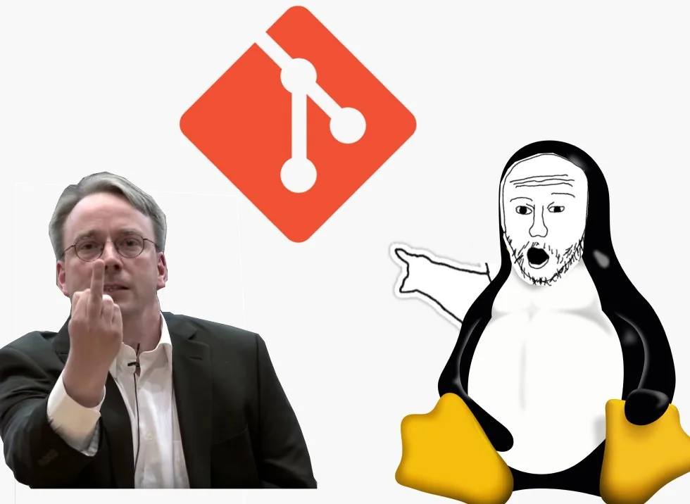

Articulos
En esta pestana encontraras articulos algunos con incluso un video done hablo de simples curiosidades o historias
sobre programacion e informatica ademas de opiniones o analisis tecnicos o incluso tutoriales o ayudas

La historia de la tecnologia : Flash-WEB su nacimiento y declive.

La historia de la tecnologia : Git su nacimiento y evolucion.